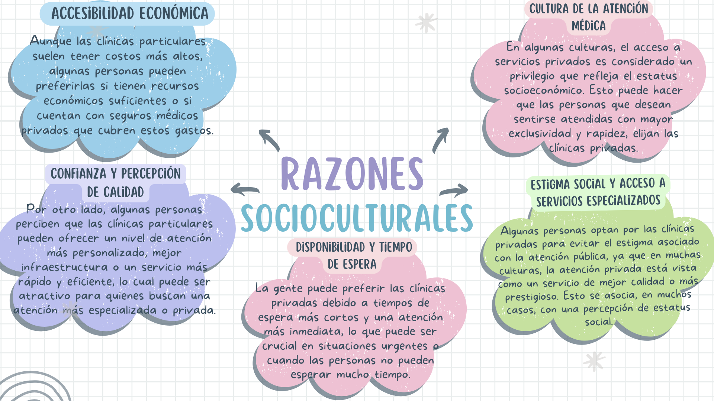
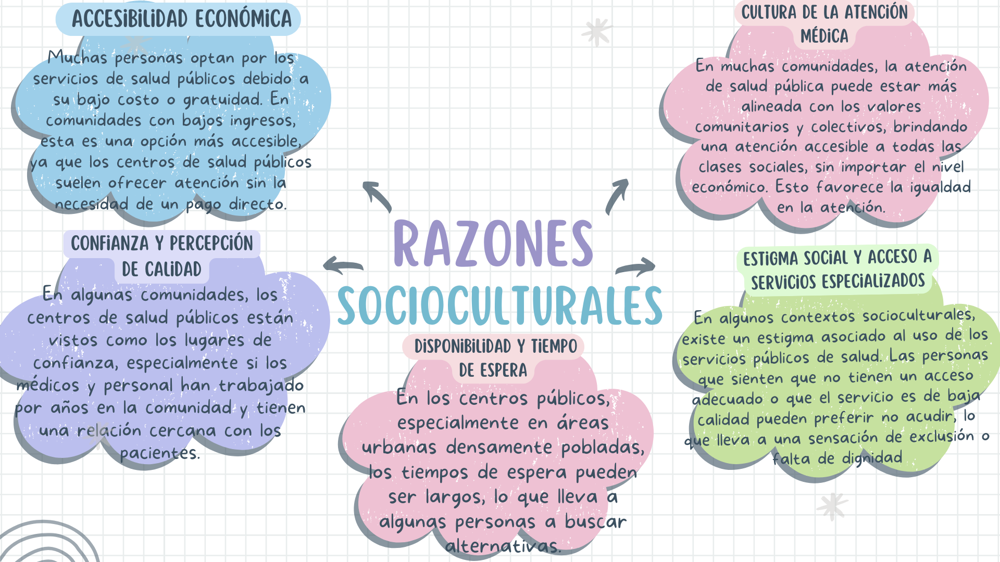

REFLEXION
En resumen, la decisión depende de una mezcla de factores económicos, percepciones de calidad, confianza en los médicos y normas socioculturales. Cada persona elige la opción que considera mejor según sus circunstancias y creencias.



En resumen, la decisión depende de una mezcla de factores económicos, percepciones de calidad, confianza en los médicos y normas socioculturales. Cada persona elige la opción que considera mejor según sus circunstancias y creencias.
Ámbito: Practica y Colaboración Ciudadana
Categoría: Salud y sociedad
Numero de progresión: 3
Descrpcion de la Progresion: Analiza como las condisiones socioculturales y las relaciones interculturales son factores determinantes en la salud integral de las personas, Familias y Cominidades, reconociendo la dibersidad de servicios de salud en su contexto